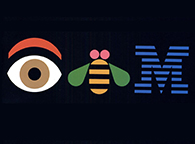

Welcome to the Sajid Ali Khan Official Site
Sajid Ali Khan is an IBM Technology Evangelist. He aspires to inspire. The Maverick. The one with the ins and outs of IBM Technologies. Working with highly reputed clients and vendors across the globe to enable IBM Technologies. Subject matter expert, an influencer, and a trusted advisor for IBM Clients. Working with IBM teams in an effective way to progress & expand renewal opportunities for Clients on time, year-to-year growth on pricing, and opportunities for up-selling whilst minimizing opportunity/Client attrition. Client engagement, negotiation & converting existing business opportunities across a widely varied Client install base. Maintaining IBM's superior level of Customer focus while negotiating and closing opportunities. Ensuring optimal client engagement by proposing both the value and technical differentiator of the Software SNA portfolio.
Capable of providing expert guidance on AI & data to clients, helping them leverage to drive business outcomes and improve overall ops. Work closely with the sales teams and customer success leads to understand client needs and go with tailored solutions that address their specific pain points and goals. Also, collaborate with other teams within IBM to ensure seamless integration of AI and data and provide ongoing support to clients throughout the renewal process. Help clients unlock the full potential of AI & data, ultimately driving growth and success for both IBM and its clients.
Connected with like-minded people around the world. Write Technical Blogs on Data and AI. Lead technical talks as well as represent IBM in tech events and conferences as a speaker, presenter, or panelist.
He follows Dr. A. Q. Khan & Steve Jobs, trying to work for his people like them and make his nation parallel to other successful nations. People found him to be a game-changer. The one who sees things differently.
He is also a Guinness World Record Holder. He thinks the Guinness Book of World Records may simply be a book of crazy people with goals and blind ambition. Being an IBMer, he encourages his imagination every day. He's also a big believer in following others' passion in IBM technology and he gets to help other techies find their passion in it.